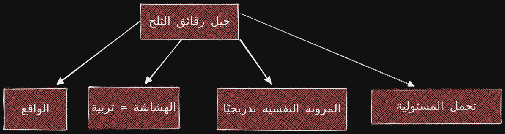
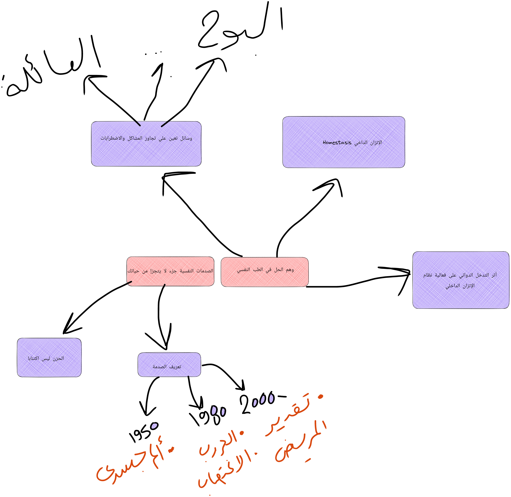

الفصل الأول: جيل رقائق الثلج

من الواضح جدا انتشار ظاهرة الهشاشة النفسية وتضخيم المعاناة والألم دون أدني عقلانية أو مواجهة للأمور التي ف الغالب تكون تافهة ولا ترقي لمستوي المعاناة المتواجدة.
مفهوم تضخيم المعاناة (pain catastrophizing) في علم النفس يعبر عن حالة شعورية تعتري الإنسان عند وقوعه في مشكلة ما ، تجعله هذه الحالة يظن أن المشكلة أكبر من قدرته علي التحمل ويتخللها وصفه للمشكلة بأوصاف أكبر من حجم المشكلة الحقيقي، تؤدي في النهاية لاستسلام الشخص للشعور بالضياع وعدم قدرته علي مواجهة الحياة.
من الواضح جدًا أن الجيل الحالي يتميز بخصلة غريبة ألا وهي أنك تجد شابا في عمر ال 25 وعمره العقلي ومستواه الإجتماعي الفكري لا يتجاوز سن المراهقة، فهل أصبح سن المراهقة حقًا حتى ال 25 ؟
إنطلاقًا مما سبق، جري تسمية الجيل الحالي جيل رقائق الثلج وترجه هذه التسمية إلي سببين:
- أولهما: رقائق الثلج هشة جدًا لا تتحمل أي ضغط إذا تعرضت ﻷي ظرف خارجي.
- ثانيهما : رقائق الثلج مختلفة عن بعضها البعض كما هو الحال مع جيل اليوم حيث يشعر كل فرد فيه بتميزه عن غيره واستحقاقه لما هو أفضل ويتم تغذيته بأفكار الريادة والاستحقاقية أي أن له توقعات
- عالية من جميع من حوله ويتوقع أن يعامله الجميع بحفاوة.
الهشاشة تربية وبيئة وليست طبيعة وفطرة
نسيم طالب: يولد الإنسان منذ صغره ولديه مرونة نفسية تساعده علي التكيف والتعامل مع المؤثرات الخارجية، ينقسم الناس في تكيفهم وتعاملهم إلي ثلاثة أنواع: ضعيف، قوي، غير قابل للكسر.
السبب في اختلاف استجابة الجيل الحالي عن آبائهم مثلا يقبع بسبب التنشئة والتربية لما تعرضت له الأجيال السابقة من ظروف أجبرتها علي تكوين شخصية قابلة للتعامل مع المشكلات وحلها.
يلجأ الشباب في الجيل الحالي إلي الشعور بالإهانة والخوض في شخصية الضحية من أضغر كلمة، حتي صرنا نسمع عن حملات لمحاربة مفهوم التنمر، وهو مفهوم حقيقي موجود لكنه لم يكن أبدًا بهذا التضخيم الموجود له وهو ما أدي إلي خلل في معرفة إن كانت المشكلة عادية أو أنها تنمرًا علي سبيل المثال.
ما لا يقتلك يجعلك أقوي ، علي المرء أن يتقبل وقوعه فى المشكلات أو الحزن ويحاول جاهدًا التغلب عليها.
الحزن جزء أساسي من الوجود الإنساني، ويجب معاملته كوسيلة فعالة لبناء إنسان قادر علي مواجهة الصعوبات والتغلب عليها، بمعني آخر، هو حالة لا بد منها لا يجب الفرار منها بالميل إلي شخصية الضحية بل بالعمل علي مواجهة ماسببها ومحاولة إيجاد حلول له.
المرونة النفسية تنمو تدريجيًا
يؤدي الدلال المتزايد وعدم تحمل المسئولية إلي إنتاج فرد غير قادر علي تحمل مشقات الحياة مهما كانت بسيطة ومهما كانت الضغوطات الوااقعة عليه.
تربية الآباء ﻷبنائهم في هذا الجيل وإصباغ صبغة من الحماية الزائدة عليهم أدت في النهاية لعدم تحمل الأبناء أيًا من مشقات الحياة، أنتجت جيلا هشًا متأخرًا عمن سبقوه من الأجيال من حيث الوعي المعرفي والقدرة علي التحمل والمرونة.
بعض الدراسات أثيتت أن القشرة الأمامية للمخ لا تنضج تي سن ال 25، وهو إن كان صحيحًا فإنه يغفل فكرة أن المخ لدن ومرون طبقًا للتجارب التي يعيشها الإنسان.
هناك الكثير من الفوائد التي تنتج من تدريب أنفسنا علي المرونة النفسية:
- تحسن الصحة النفسية والذهنية.
- تحسن الأداء الإدراكي المعرفي.
- الحفاظ علي الهدوء الداخلي.
- القدرة علي الإرتداد سريعًا بعد الهزائم والإنتكاسات.
تحمل المسئولية الآن
أهم عامل يمكنك من بناء نفس مرنة هو تعويدها علي المرونة من خلال خوض غمار الحياة الحقيقية، لا حياة وسائل التواصل الإجتماعي، وتربية النفس علي تحمل أخطائها والتعامل معها ومحاولة إصلاحها.
هذا السبيل وحده هو الذي يمكن الإنسان من بناء نفس مرنة لا تتأثر بما يقوله الناس عنها ولا ترى عيبًا في الإعتراف بالتقصير مع الحرص علي معالجة الخطأ والتعلم من المواقف.
كلمة السر هي المناعة: يبنغي أن يكون الإنسان مناعة ضد كلام الناس، مشاكل الحياة وتقلباتها، ونعودها علي تقبل المكابدة والألم مع الوضع في الإعتبار أن هذا الأمر ليس متفردًا للشخص بل هو الطبيعي في هذه الحياةالمليئة بكثير من الضغوطات.
توطين النفس علي الصبر علي المكاره، والإلتجاء إلي الله مع استنفاذ الوسع في الأخذ بالأسباب هو الطريق لخروج الإنسان من ضيق المشاكل وتحمله علي الإنشغال بالمهام الكبري.
الفصل الثاني: هوس الطب النفسي

- الصدمات النفسية جزء لا يتجزأ من الحياة. هذا هو ديدن الحياة بل ديدن النفس البشرية ذاتها والتي تتبدل أحوالها ويصيبها ما يصيبها بمرور المواقف والصراعات اليومية، فتجد الكسل تارة والنشاط تارة أخري، والحياة أيضًا لها حزنها وفرحها.
- تملي علينا الظروف المعيشية الطبيعية أحيانًا مجموعة ضغوطات نستجيب لها وفقًا لميكانيزمات المواجهة الخاصة بنا، فكلما زادت مرونة الشخص النفسية وقدرته علي مصارعة هذه التحديات كلما كانت العواقب أقل وطئة ، ثم ما يلبث أن يبحث الشخص عن وسيلة للدعم تختلف بإختلاف طبيعته، فمن الناس من يحبذ ممارسة الرياضة، ومنهم من يحبذ البوح لأحد المقربين.
- المشكلة اليوم تكمن في نزوع الناس وتعطشهم لمشاعر واهمة وشعارات براقة تدعوا للحفاظ علي الصحة النفسية. ومع أهمية العنوان، فإن المضمون يختلف بالكلية عما يجب أن يتم لتحقيقه، فتجد اللجوء للطبيب النفسي في كل صغيرة وكبيرة إلي حد الهوس للحفاظ علي التوازن النفسي، ويكأن “التارجت” يكمن في التوازن النفسي، دون حتي أن يتم تعريف واضح لمفهومه.
مفهوم الصدمة
إختلف تعريف الصدمة علي مر العصور طبقًا لمتغيرات كثيرة. عند الرجوع إلي الدليل الإرشادي للإضطرابات النفسية في العالم، نجد أن التعريف قد مر بثلاث تغيرات كبرى. قبيل العام 1980، إقتصر التعريف علي الإضطرابات الناتجة عن الأضرار المادية للجسم مثل إضابة الدماغ الرضية Traumatic Brain Injury.
توسع المفهوم في الإصدار الثالث للدليل ليشمل إضطراب ما بعد الصدمة Post-traumatic Stress Disorder ويعتبر هو أول إصابة للصدمة دون ضرر مادي يتم تعريفها، وقد عرفها الدليل آنذاك أنها تجربة عنيفة شديدة الهول يختبرها المريض مثل الحرب والإغتصاب والتعذيب. حدث إنقلاب في هذا المنظور بعيد العام 2000م، حيث تسلل مفهوم إضطراب ما بعد الصدمة ليشمل أى تجربة مر بها الشخص وتسببت في أذي مادي ونفسي ، مع آثار نفسية سلبية ومستديمة علي صحته النفسية والذهنية والشعورية.
تكمن المشكلة هنا في عدم وجود أى معيار علي أساسه يتم إدراج الشخص تحت مظلة المريض النفسي، بل يرجع التشخيص إلي وصف المريض نفسه لحالته والتي -غالبًا- ما ستكون مشوشة بعض الشئ وغير دقيقة.
وعلي هذا الأساس فإننا رأينا فرطًا في وصف حالات إنسانية بعينها كالحزن علي أنه اكتئابًا مثلا، وهذا الإفراط يرجع بشكل رئيسى إلي الخلل الذي حدث في تعريف الصدمة والإضطراب النفسي كما ذكرنا سلفًا.
يتم تشخيص الشخص أنه مصاب بإضطراب الإكتئاب الحاد Major Depressive Disorder عبر ملاحظة خمسة أعراض رئيسية هى (الإحباط، فقدان الإهتمام، نقص الشهية، التغير في النوم، الإرهاق) إذا استمرت لمدة أسبوعين متواصلين. لكن السؤال هنا، ما الذي يجعل هذه العناصر الخمس وحدها مجتمعة معبرة عن الإضطراب النفسي بالتالي تلزمنا بالتدخل العلاجي؟ الإجابة بسيطة لا يوجد دليل قطعي علي صلاحية هذه العناصر لإعطاء استنتاج ختامي بل هو مجرد رأي مجموعة من الناس بلا معايير واضحة. هذه الحالة من التشخيص المفرط للحالات العادية بأنها تعاني من إضطرابات أدى في النهاية إلي
إذًا ما المشكلة من الإفراط في توصيف هذه الحالات الإنسانية العادية وتضخيمها وإحالتها بالتبعية لمختص نفسي لعلاجها؟ المشكلة أننا نجد موجة من اللجوء إلي شعارات مثل “ الحفاظ علي الصحة النفسية” والتي تحولت إلي هوس هذه الأيام، فتجد الشخص يلهث وراءها حثيثًا من منطلق أنها شئ لا بد منه بل يلوم نفسه علي عدم وصوله لهذه الحالة من “السواء النفسي” دون أن يعطينا أصلًا تعريفًا واضحًا بماذا يقصد بمفهوم “السواء النفسي”.
الحياة ستعج بالأخطاء دائمًا، والسعادة الحقيقية تشتمل علي الرضا وتقبل الأخطاء ما دامت تبذل أقصي ما في وسعك لتحقيق النجاح، لكن التكالب المتزايد والنزوع إلي الذهاب للطبيب النفسي مع كل صغيرة وكبيرة يؤدي إلي فقدان جوهر المعنى المستفاد من كل صعوبة في الحياة: ما لا يقتلك يجعلك أقوى.
نظام الاستتباب والتوازن الداخلي للجسد : Homoestasis
يتكيف الإنسان مع الصدمات النفسية والمشاكل الحياتية بفضل ما يسمى بنظام التوازن الداخلي للجسد. يعمل جسم الإنسان على الحفاظ علي التوازن الكيميائي والبيولوجي، ويرتبط هذا النظام بقدرة أعضاء جزء الإنسان علي تأدية دورها، ومن ثم، فإن أي تعطيل بهذا النظام يمكن أن يؤدي إلي موت الإنسان نتيجة عدم قدرة الأعضاء علي تأدية دورها.
كذلك يعمل المخ علي التكيف مع الإضطرابات والصدمات الحياتية، ويقوم كل إنسان طبقًا لميكانيزماته الخاصة في تتبع نمط ما من السلوكيات التي تحاقفظ علي هذا التوازن، فهذا يحب أن يركض، وهذه تحب أن تأكل في مطعم فاخر، وكل هذه ما هي إلا ميكانيزمات وأدوات تختلف من شخص للآخر هدها في النهاية واحد وهو التغلب علي حدث ما في واجه المرء في حياته.
أما إذا لجأ الإنسان إلي العقاقير الطبية وهو لا يحتاج إليها فإنه قد يعطل نظام التوازن الداخلي للجسد ويجعل الدروس المستفادة من المشاكل اليومية مثل إجراء تغييرات في طريقة المعيشة وإزالة الضغط بممارسة الأنشطة، يجعل كل ذلك معطل.
العلاج: كيف نهرب من دوامة الطب النفسي والعقاقير (حين لا نحتاج إليها)
- البوح: مجرد التنفيس عما بداخلك قد يجعلك في حال أفضل حتي وإن كنت تعتقد أن الكلام لن يحل مشكلتك. فالإنسان مجبول علي حب إخبار الناس بما داخله خصوصًا أشخاصه المقربين. يقول الفقيه ابن عبيد الله السقاف في معني البوح عند ورود النعم مدللًا علي ذلك بذهاب النبي صلي الله عليه وسلم إلي زوجته السيدة خديجة رضي الله عنها يوم نزول الوحي، فقال: ((لا تتجدد لأحد نعمة ، إلا حدثت في صدره ولولة لا تزول عنه، أو يفضي يخبرها إلي أحب الناس إليه )).
- عدم الإستسلام للحزن وإشغال النفس عنه، فكما قال أحمد خالد توفيق في أحد رواياته: ((حل جميع المشاكل النفسية، لاتكن وحيدًا، لا تكن عاطلًا)).
- الأنس بالأهل والأضدقاء ودوائر الدعم القريبة.
- ترك مساحة للنفس للتعافي ومعالجة الأمر عن طريق نظام الاستتباب النفسي دون تدخل علاجي.